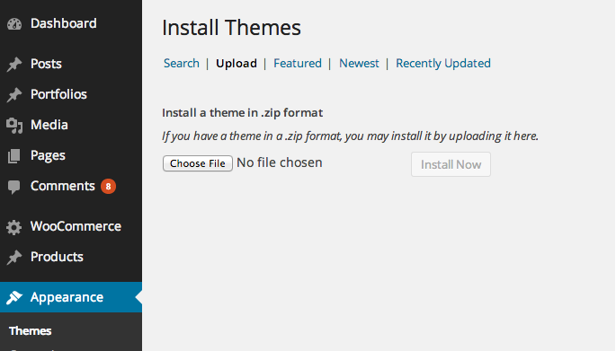

Thank you very much for choosing our theme. We truly appreciate and really hope that you'll enjoy our theme!
If you like this theme, Please support us by rating us 5 stars.
Please note that, Right now, all support will be conducted through our support forum http://themes.webdevia.com/support
Please create your own account, make sure that username in forum must be the same as your Themeforest username, none blank space contained in registration fields.
Thanks so much!
Once you purchase the theme from themeforest, you'll be able to load 2 file type.
If you select to download all files and documentation ( the zip name will be themeforest-xxx-xxxxx.zip ), you have to extract it out ( to get themename-vxx_xx.zip file ) before installing it to wordpress system.

To install the demo content please after installing the theme and the required plugins
To import this information into a WordPress site follow these steps:
Once again, thank you so much for purchasing this theme. As I said at the beginning, I'd be glad to help you if you have any questions relating to this theme. No guarantees, but I'll do my best to assist. If you have a more general question relating to the themes on ThemeForest, you might consider visiting the forums and asking your question in the "Item Discussion" section.